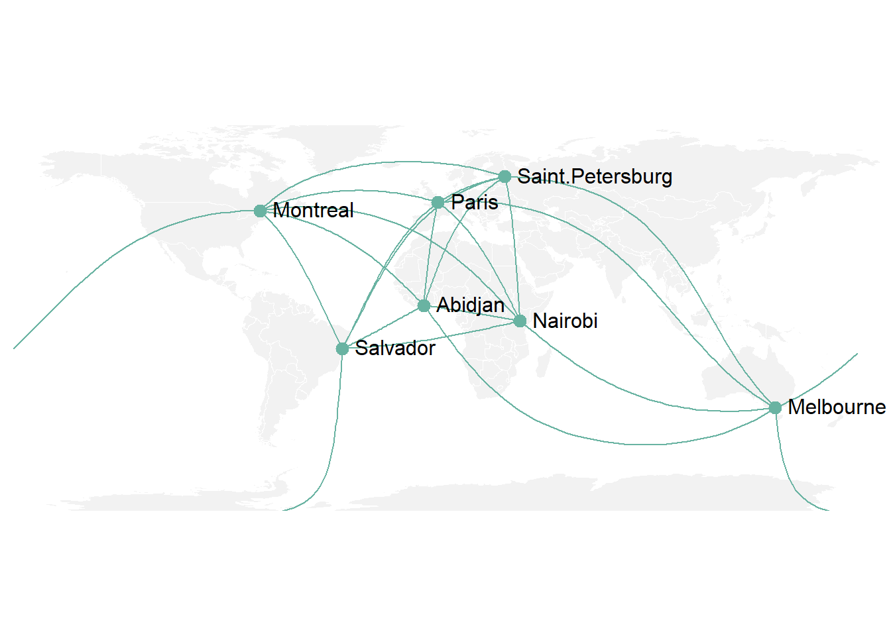

A Friend in Need is a Friend Indeed
Your friends,on average have more friends than you do
Do you ever get down on yourself ? you feel like you’re unpopular, like all your friends have way more friends than you? everyone feels that way sometimes.
Introduction
Some people will tell you that it feels that way because of the false lens of social media, or because you’re being too self-critical,but it’s true , and it can be utilized for early detection and prevention of an outbreak. Mathematical paradoxes are fascinating brainteaser. Epimenides was a semi-mythical 7th or 6th century BC Greek seer and philosopher said that
“All Cretans are liars”
In network science things are often not as they seem. Here we will explore the ‘Friendship Paradox’ and how it can be used early detection and prevention of an outbreak, how to detect and control infectious diseases.
What is Friendship Paradox
Friendship paradox was first described by mathematical sociologist and the person who should never be a middle school guidance counselor Scott L. Feldin 1991 paper in the American Journal of Sociology entitled “Why Your Friends Have More Friends Than You Do”. The simplest way to think of the friendship paradox is as a form of sampling bias. So, if we were trying to figure out how many friends the average person has, we have to think about all the people in the world, and how many friends they have.
Before we get into the application of this paradox let’s spend couple of minutes to understand what it means and why it’s true.
Brief Explanation
A, B, C, D are a part of social network. Let’s represent them as nodes, and draw edges connecting the nodes to indicate friendship.
Based on this graph, A is friends with B,C and D. As A is connected with all other B,C,D that’s why A is situated on center and establishing network with his all other friends.
Here B is friend with A and C. Here, B is establishing network with both of his friend A and C. Actually, A and C is connected via B. They are not mutually connected with each other.
Similarly, C is establishing network with both of his friend A and B. Actually, A and B is connected via C. They are not mutually connected with each other.
At last we can say that D is connected with A. There are four individuals, and they have a combined total 8 friends.
So on average, an individual has \(\dfrac{8}{4} = 2\) friends
Now, let’s take this one level deeper. A is a friend of 3 individuals, so we’ll put his friends list below each of those instances.

B is friend of 2 individuals, so we put his friends list below each of those instances. C is also a friend of 2 individuals, so we put her friends list below of those instances. And D is a friend of 1 individual, so we put his friends list below that instance. So, the 4 individuals have a combined total of 8 friends, who have a combined total of 18 friends.
So on average, an individual’s friend has \(\dfrac{18}{8} = 2.25\) friends
“On average an individual has fewer friends than his friends do”
And it’s that way because the popular individuals are over represented in the latter calculation. In other words, popular A shows up in each of the others individual friendship networks and thus can make them all feel relatively deprived, while unpopular D shows up in only A ’s friendship network and can only make A feel relatively advantaged. It’s form of sampling bias in which people with more friends are more likely to be an individual’s friend group and this bias may have important applications for studying the dynamical process of social network, like detecting an outbreaks.
Early Detection of Flu Outbreak
There are a lot of factors which affect one’s likelihood of contracting a virus. Some conditions are age, underlying health conditions, personal hygiene, airflow and ventilation conditions and positions within a social network. Individuals near the center of a social network are fewer steps away from the average individual in the network, so during the course of an outbreak, they are likely to be infected sooner than those at the periphery (all else being equal).
Nicholas Christakis, professor of medicine, medical sociology and sociology at Harvard University, and James Fowler, professor of medical genetics and political science at the University of California, San Diego, used the paradox to study the 2009 flu epidemic among 744 students. The findings, the researchers say, point to a novel method for early detection of contagious outbreaks.

Red nodes correspond to infected individuals, yellow nodes correspond to friends of infected individuals, and node size is proportional to the number of friends infected. It’s subtle, but on average the red nodes are larger and in a greater concentration at the center of the network.
Below graph is the dummy version of previous picture.
But when it comes to large networks, like a city or a country, it would be costly, time-consuming,and

intrusive, to map out the entire social network in order to identify the centrally located individuals. And this is where the friendship paradox could come in handy.
Detect and Control Infectious Diseases
Infectious diseases are responsible for 32% death of worldwide with the biggest challenges in the poorest parts of the world. Inventing cheaper ways to detect and combat diseases especially in the most vulnerable areas is key. Infectious diseases are spread through contact between individuals via air particles or through direct physical contact.
If we look at social networks like graphs we can see who’s in contact with whom. In practice we probably don’t know precisely who’s in touch with whom or where the edges are and joints of the graph lie but we may know about its probability distribution.
Probability Distribution
A probability distribution assigns a probability to a particular outcome. For example, when rolling a die each outcome has a probability of \(\dfrac{1}{6}\) . These probability distributions also describe network.
Network
Network come in many different forms the simplest model is the erdos-renyi network where each possible edges is drawn with a fix probability.
Now we will vary the probability parameter and see how our graph changes
However when modeling the spread of infection on such a network epidemiologists and social scientists noticed that this model didn’t describe real social networks other models such as the preferential attachment better show how disease is spread through social network.
This model draws links depending on the existing number of links a point has just like how the rich become richer. We’re certain of vaccinations stop infectious diseases but if we can only afford to vaccinate a limited number of people or if a very infectious disease needs to be stopped quickly who should be targeted. Ideally we’d aim for the hub in the middle of the smaller networks as they have contact with the most people.
But how can we identify who these hubs are ?
If we randomly vaccinate people it’s highly unlikely that we’ll be successful. The friendship paradox says that on average your friends have more friends than you do.
Because if we pick a random person and ask them to name a random person and ask them to name a friend they’re more likely to name someone who knows lots of people rather than someone who only knows 1 or 2 people.
This means that vaccinating a randomly selected contact of a randomly selected person will be more likely to hit the nub node and extinguish the epidemic . This is particularly true for preferential attachment like a social networks.
The friend group is better connected and likely to be connected and likely to be infected sooner, an effective immunization strategy might be to vaccinate the friend group first.
Friendship Paradox in Facebook and Twitter
There is another form of outbreak which relates to the friendship paradox, things that go viral o the internet. And social media websites, like Facebook and Twitter, offer an ideal platform for studying the friendship paradox. They have huge global user bases and their connections are fully mapped out. In 2011, researchers studied the entire facebook social network and they found that 92.7% of users, on average, have fewer friends than their friends have.
In 2011, \[721\] MILLION USERS \(68.7\) BILLION FRIENDSHIP
If we look at twitter, twitter is a micro-blogging service on which users post short messages often accompanied by keywords marked by a hash to help them show up more easily in Twitter searches. Now unlike relations on facebook, Twitter relations are directional. When you follow someone, information flows in one direction. You get updates on their tweets, but not vice versa. You are the follower, they are the followee. In 2013, researchers studied a large portion of the global Twitter activity from 2009.
DATASET FROM \(2009\),
\(476\) MILLION TWEETS
\(5.8\) MILLION USERS
\[193\] MILLION FOLLOWS
and they found that 98% of uers were less popular than their followers and their followees. In 2014, other researchers used a different 2009 twitter dataset to explore hashtags going viral, a form of digital contagion.

They compared randomly chosen individuals with a random selection of people they followed, to see whether trending twitter hashtags were used sooner by the followee groups. In this study they analyzed the performance of the 32 most widespread hashtags that appeared in their ample groups.And they found that, on average, members of the followee group, used the hashtags before the random group for all but 2 hashtags with average lead time of 7.1 days suggesting that by simply monitoring the activity of the followee group, you can detect viral outbreaks of the use of novel hashtags one week earlier than if you had monitored a random group. And even though this example is just of a digital outbreak on the internet, knowledge of the online activity of a group known to be central to a network, has the potential to provide early insights into real-world outbreaks.
Online Search and Friendship Paradox
For example, if Google observes a spike in a searches related to the flu, well, may be a celebrity got sick, or may be someone discovered a universal vaccine for the flu, or may be there’s a new documentary on the flu, there could be lot of reasons on the spike. But one of those reasons is that people are Googling the flu because they are sick with the flu. And if Google were able to identify the spikes associated with the latter, it could be useful to know the centrality of those sick people.
Are they people on the periphery of a social network or are they people who are central to the network, and in a position more likely to infect others and initiate and outbreaks ?
Conclusion
We could spend a lot of time going into the feasibility and ethics of generating and accessing such information. But let’s leave it at this: information is power. The Friendship Paradox is not just an interesting statistical phenomenon. It can have real world applications, specially in our interconnected world.
Reference
Social Network Sensors for Early Detection of Contagious Outbreaks
Anonymous (2010) Update: Influenza Activity – United States, August 30, 2009 – January 9, 2010. Morb Mortal Weekly Rep 59: 38–48.
Christley RM, Pinchbeck GL, Bowers RG, Clancy D, French NP, et al. (2005) Infection in social networks: using network analysis to identify high-risk individuals. Am J Epidemiol 162: 1024–1031.
Shah M. Disease Propagation in Social Networks: A Novel Study of Infection Genesis and Spread on Twitter. Workshop on Big Data, Streams and Heterogeneous Source Mining: Algorithms, Systems, Programming Models and Applications; 2016; San Francisco, CA, USA. Proceedings of Machine Learning Research; 2016. Aug 14.